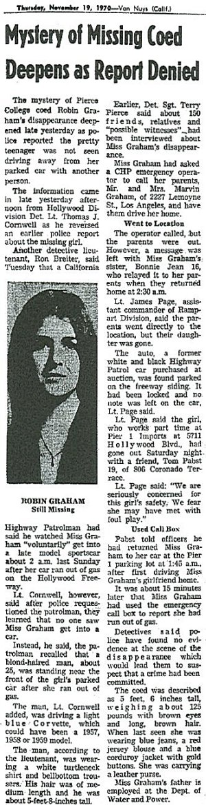
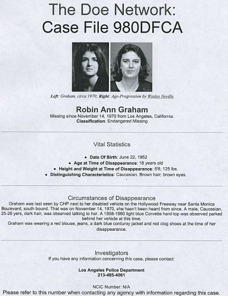

|
Robin
Graham - Possible Zodiac Victim? |
|
|
|
On November 15, 1970 (during a full moon, a Zodiac trait) Robin
Graham was abducted.
A man had been seen earlier working under the hood of her car. His car was a
primered ' 59 Corvette. She had dropped her car off earlier at Pier
One Imports and got into her boyfriends car for an evening out. She later got in her car, drove off, and in a short while it stalled
out. The Corvette driver pulled up behind her car and commenced helping her get the car started. They were seen driving off in his car. She has never been found. |
|
|
|
Some
Manson Family members were renting a house just five doors away
from where Graham lived. She had been attending Pierce College in
the San Fernando Valley. A Family member lived very near to the
college and had been visited by Bruce Davis in 1968-70. Robin had
visited friends that lived near the LaBianca residence. The
LaBiancas were victims of the Manson Family in 1969. |
|
|
|
Her parents are still waiting for news and still have the same phone number and address. Her parents said that a woman wrote
to them when the
Los Angeles Times did a story on Robin. She said that she, too, had stalled out on the road and that a man stopped (in a Corvette) and came up to her and said he was an "off duty detective" and that he would give her a ride. She refused. After hearing
about the letters contents the woman was contacted and she retold the story. When she was shown
a picture of Bruce Davis she said that it, "looked like
him, especially the eyes" - she never forgot them. See the
section on Car-Related Abductions on the Pertinent
Information
page. |
|
|
|
"There are a hell of a lot more
(victims) down there (Southern California)," said Zodiac. |
|
". .
. you are only finding the easy ones." The Zodiac also said
"The reason that Im writing to the (L.A.) Times is this, They
dont bury me on the back pages like some of the others." |
|
|
|
 |
|
11/19/70
Newspaper Article |
|
|
|
It
should be noted that there are two police reports of the Graham
abduction. In one, the perpetrator was said to have had "dark
hair." The other one says it was "blond." The two
age estimates are very close, 25 years old and 26 years old. Both
reports say he was "young" in appearance.
The height of the suspect was given as 5' 8". He was
seen wearing a white turtle neck sweater and bell bottom
pants. |
|
|
|
The
first description given by victim Mike Mageau (and this was said before
a long list of suspects emerged and revisionism had set in) says
that Zodiac appeared to be stocky and "young," about 26
to 30 years old. Bryan
Hartnell and Officer Slaight, two voice concept witnesses, said
Zodiac sounded to be between 20 and 30 years of age, or
"young." |
|
|
|
Zodiac
had been right next to Mageau and he gave his height as being
"short," around 5' 8". He reported the hair color
as "light brown." Bryan Hartnell said it was "dark
brown." An SFPD report said "reddish-blond." The 10/18/69
wanted poster says Zodiac had "brown hair." Kathleen
Johns (abducted by Zodiac) said it was "brown" and in
one interview she said only that it was "dark." |
|
|
|
Mageau
said the suspect may have been wearing a sweater. Johns said
Zodiac was wearing a white shirt and bell bottom pants. More than
one witness has said that Zodiac was wearing bell bottom, baggy
type pants. All of this is similar to the description of the
suspect in the Graham case - a sweater and bell bottoms. |
|
|
|
In
the main, all descriptions of the Graham perpetrator is not
dissimilar to known testimony of Zodiac victims who actually saw
Zodiac. |
|
|
|
Bruce
Davis was about 5' 8" tall. He was called "husky"
or "stocky." He turned 27 years old in October 1970.
Graham was abducted November 15, 1970. |
|
|
|
|
|
 |
|
|
|
|
|
Back
Contents
Top
of page |
|
|
|
|
|
The
Water Connection |
| |
|
Water held a very important place in the symbolic teachings of Celtic / Druid lore. Charles Manson studied these subjects and in at least one taped interview affirmed Druidism. Manson instructed the Family that, whenever possible, they were to conduct their "activities" near water or it's symbolic representation. As Manson went so went Bruce Davis - both believed alike. |
| |
|
Cheri Jo Bates was killed at Riverside City College in
Riverside, California. The killer's car was parked on
Riverside Drive. In a typed letter the killer indicated that Bates was not the first. |
| |
|
Go back to 1963 and a couple was killed in Santa Barbara near water. This case is unsolved. In 1964 the unsolved
Seaside Honeymoon Murders in San Diego were committed right next to the ocean. In Zodiac's 1968 attack, the couple was murdered on
Lake Herman Road, very near the lake itself. In 1969 Zodiac attacked a couple at Blue Rock
Springs. He may have left the area using
Lake Herman Rd. The killer made his phone call from the intersection of Tuolumne and
Springs Road. In September of that year he attacked another couple at
Lake Berryessa and made a phone call from near the Napa Car
Wash. Came October and Zodiac murdered a cab driver in San Francisco on
Washington St. very near to a
fire
hydrant. At least one suspected Zodiac killing took place in
Lake County. Donna Lass (a possible Zodiac victim)
disappeared from near
Lake Tahoe. |
| |
|
On at least one occasion the killer appeared in Navy-like clothing. Zodiac was also interested in astrology and when the attack dates and times are astrologically charted the three water signs and their associated planets figure
prominently. |
| |
|
Back |
| |
| |